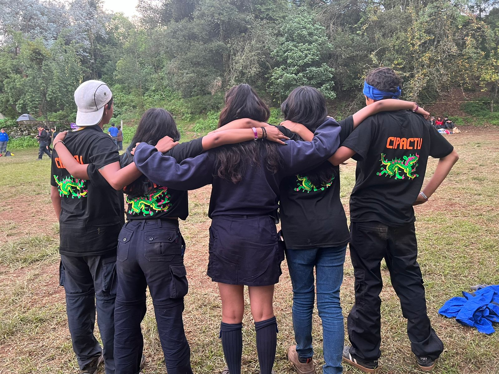
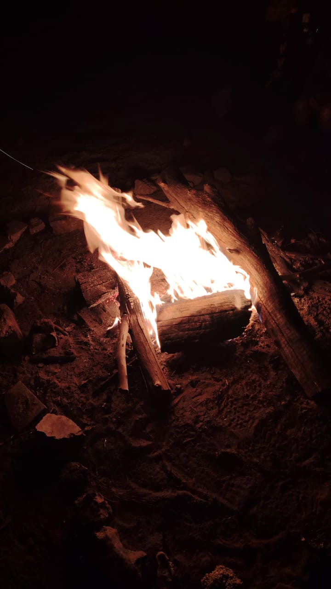
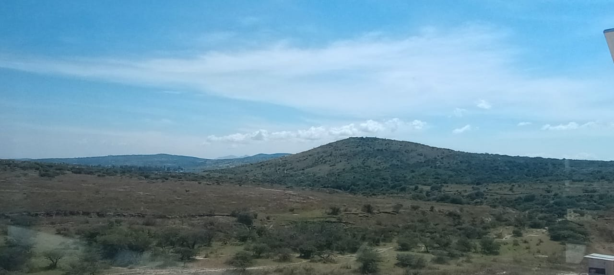

Bienvenidx
Este blog es un pequeño espacio donde comparto mis fotografías y recuerdos más especiales que he vivido como parte de mi vida Scout.
- Experiencias únicas en campamentos
- Momentos que guardo con cariño
- Aventuras que continúan formando parte de mí
Galería

Campamento al amanecer

La fogata que nunca olvidaré

Un sendero que recorrimos juntas

Hermosas amistades que te encuentras en el camino
Mi recuerdo favorito 🌿
Una de las experiencias más especiales que he vivido fue un campamento lleno de emociones. El paisaje estaba rodeado de árboles y la neblina cubría el cielo casi todo el tiempo. Esa semana comprendí lo mágico que es ser Scout: vivir aventuras, aprender, crecer y compartir momentos inolvidables con mis amigas, amigos y dirigentes.